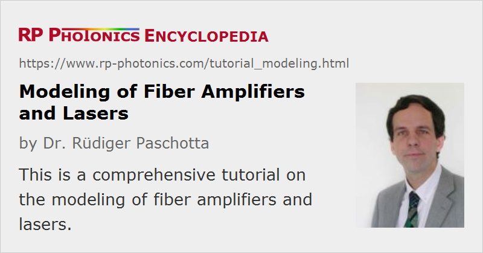

Modeling of Fiber Amplifiers and Lasers
Author: Dr. Paschotta
This tutorial gives an introduction into the modeling of fiber amplifiers and fiber lasers. The purpose of modeling should be to develop a deep and quantitative understanding of how such devices work. On that basis, both scientific research and industrial development can become far more efficient; instead of “fishing in the dark”, one can more systematically move forward and produce results.
Mainly, this tutorial explains concepts and principles rather than detailed mathematics. After all, this is what is mostly needed for entering the field of fiber modeling: before you understand concepts and principles, you have little use for complicated equations. Anyway, you can avoid spending a lot of time on sophisticated details like solving certain differential equations, if you use some advanced simulation software such as our product RP Fiber Power.
Here, we focus on active devices, containing some laser-active fibers. Mainly, we consider how light is absorbed or amplified in the fiber, and in what overall performance of devices these processes result. We are also looking into ultrashort pulse amplifiers and mode-locked lasers, where additional effects such as fiber nonlinearities and chromatic dispersion come into play.
Click on the headings to get to the following parts of the tutorial:
| 1 |
Part 1: IntroductionWhat does physical modeling mean? How is a model related to reality? How can a model be applied to benefit the development of fiber amplifiers and lasers? Is an experimental trial-and-error approach a reasonable alternative? |
| 2 |
Part 2: Optical ChannelsHere, we sort different parts of the involved light, essentially according to their wavelength and propagation directions. Broadband signals and light resulting from ASE can be represented with an array of channels. This part is easy, but some aspects need to be thought through. |
| 3 |
Part 3: Power Propagation or Field PropagationSome computer models propagate whole transverse field distributions through a fiber (numerical beam propagation), whereas others propagate only optical powers. The latter approach is frequently sufficient and allows for much faster calculations. |
| 4 |
Part 4: The Laser-active IonsThe details of laser-active ions are extremely complicated. However, very simplified models are often fully sufficient for properly describing their behavior in a simulation model. We discuss what kind of spectroscopic data are needed for such a model. |
| 5 |
Part 5: Continuous-wave Operation of Amplifiers and LasersHere, we discuss how to find self consistent solutions for the optical powers and excitation density in a fiber amplifier or laser model. For versatile modeling software, which is applicable to a wide range of cases, a rather sophisticated algorithm is required. |
| 6 |
Part 6: Amplifying and Generating Short PulsesDynamic simulations (with arbitrary time dependencies of optical powers and excitation densities) are not necessarily more difficult to do than steady-state calculations. One can simulate the behavior of pulsed amplifiers and Q-switched lasers, for example. |
| 7 |
Part 7: Ultrashort PulsesUltrashort pulse propagation involves additional physical effects. Different algorithms and data structures are needed in that case. One can then simulate the amplification of ultrashort pulses in a fiber amplifier all the generation of such pulses in a mode locked laser, for example. |
| 8 |
Part 8: Using Home-made Software or a Commercial Product?One needs to decide between developing some simulation software oneself and using a commercial product. Both approaches have their advantages, limitations and risks. A number of important aspects should be considered for that decision. |
By the way, on this website we have a lot of other materials on modeling – for example, encyclopedia articles on laser modeling, rate equation modeling, laser dynamics and pulse propagation modeling. Besides, various articles of the Photonics Spotlight deal with aspects of modeling, for example those of 2013-09-24, 2012-02-03, 2011-05-28 and 2006-11-16.
Questions and Comments from Users
Here you can submit questions and comments. As far as they get accepted by the author, they will appear above this paragraph together with the author’s answer. The author will decide on acceptance based on certain criteria. Essentially, the issue must be of sufficiently broad interest.
Please do not enter personal data here; we would otherwise delete it soon. (See also our privacy declaration.) If you wish to receive personal feedback or consultancy from the author, please contact him e.g. via e-mail.
By submitting the information, you give your consent to the potential publication of your inputs on our website according to our rules. (If you later retract your consent, we will delete those inputs.) As your inputs are first reviewed by the author, they may be published with some delay.
|  |
If you like this article, share it with your friends and colleagues, e.g. via social media:
These sharing buttons are implemented in a privacy-friendly way!